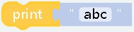
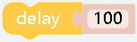

Basic¶
¶
effect： The block placed in Start will only be executed once, which is suitable for some initialization operations in the block
¶
effect： The content in the block will loop indefinitely
¶
effect： The corresponding content can be output to the console, which can be used for debugging
parameter：
"abc"is what you want to output, it can be any type
¶
effect： Delay a certain time，Set duration for operation
parameter：
"100"Can only be a number type, in milliseconds